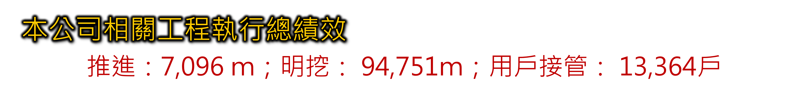
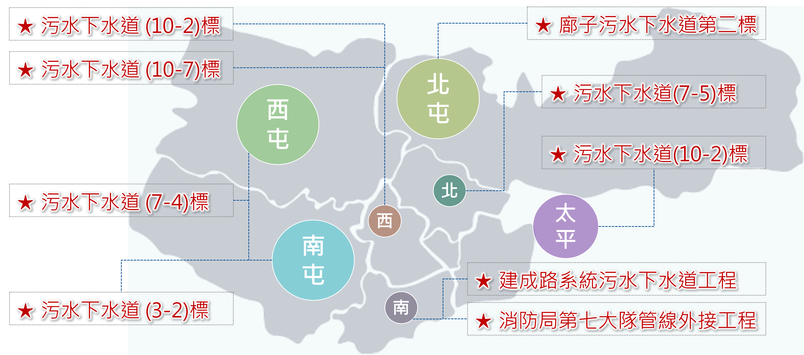

台電案件
我們承攬多項台電電纜管路工程，涵蓋苗栗、台中、彰化、南投、雲林等地區，施工項目包含電纜統包工程、管路預埋、試挖及鑽探等專案。透過推進工法與明挖工法，已累積完成逾 10 萬公尺的管線工程，展現出專業施工能力與品質保證，為電力供應系統的穩定與安全提供堅實基礎。

我們參與多項重要工程，包括台電案件與污水案件
以專業技術與嚴謹態度，展現公司卓越的施工能力與責任感。
我們承攬多項台電電纜管路工程，涵蓋苗栗、台中、彰化、南投、雲林等地區，施工項目包含電纜統包工程、管路預埋、試挖及鑽探等專案。透過推進工法與明挖工法，已累積完成逾 10 萬公尺的管線工程，展現出專業施工能力與品質保證，為電力供應系統的穩定與安全提供堅實基礎。
在污水下水道工程方面，我們積極承攬台中市各地標案，涵蓋西屯、北屯、南屯、太平等區域，推動市區污水管線建設與外接工程。透過專業規劃與施工團隊，我們有效提升城市環境品質，並改善公共衛生與生活便利性，為居民打造更安全、潔淨的生活環境。
認識污水下水道工程  